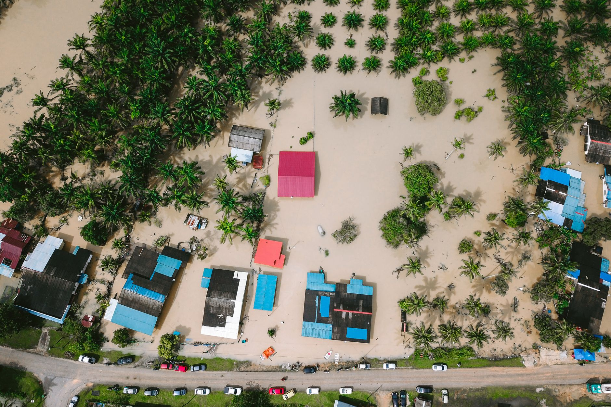

The sudden destruction of rural communities
Recent reports from the BBC have highlighted a harrowing scene in the valley where natural disasters have struck with unprecedented ferocity. For generations, these villages served as the backbone of the local economy, providing food, culture, and a sense of community for thousands of residents. However, the recent surge of floodwaters has acted as a wrecking ball, dismantling the very foundations of these settlements.
The speed at which the water rose left many families with no time to gather their belongings or even secure their livestock. As the torrents swept through the narrow streets and winding alleys, the infrastructure that held these villages together—homes, schools, and small businesses—was simply washed away. The visual evidence is staggering, showing areas where life once thrived now replaced by deep, brown silt and debris.
From green valleys to barren landscapes
The most striking aspect of this disaster is the total loss of fertile land. The valley was once famous for its lush greenery and agricultural productivity. Farmers relied on the consistent rainfall and rich soil to sustain their livelihoods, but the extreme nature of this specific weather event has stripped the topsoil away, leaving behind a landscape that looks more like a moonscape than a valley.
The environmental impact is profound and potentially permanent. Without the protective layer of vegetation and nutrient-rich earth, the land is now highly susceptible to erosion and further degradation. Experts suggest that even if the waters recede, the ability of the valley to support life and agriculture may be compromised for many years to come.
Voices from the ground
Survivors of the flood are struggling to process the scale of their loss. Many have lost not just their homes, but their entire history. In these rural areas, family legacies are often tied to the specific plots of land they have farmed for centuries. To see that land rendered useless is a psychological blow that is difficult to quantify.
It is not just the houses that are gone; it is the soul of our village. We look out at the fields and we do not recognize our own home anymore.
Aid workers on the scene describe a sense of profound isolation among the survivors. With roads washed out and communication lines severed, many of the most remote villages are struggling to receive even the most basic necessities like clean water and medical supplies. The humanitarian crisis is unfolding in real-time as the scale of the devastation becomes clearer with every passing hour.
The role of climate change in extreme weather
Meteorologists and environmental scientists are pointing toward the increasing frequency and intensity of such events as a symptom of a changing global climate. While floods are a natural occurrence, the sheer volume of water witnessed in this valley suggests an atmospheric instability that is becoming more common worldwide. Warmer temperatures lead to more moisture in the air, which translates into more violent downpours.
This pattern of weather is creating a new reality for rural communities. Instead of predictable seasonal cycles, they are now facing unpredictable and extreme events that can wipe out years of progress in a single afternoon. This volatility makes long-term planning nearly impossible for local governments and individual families alike.
Looking toward a difficult recovery
The road to recovery for the valley will be long and incredibly expensive. Rebuilding infrastructure is only the first step; the more difficult challenge lies in restoring the land itself. Soil remediation projects will be required to make the area farmable again, and many residents may have to decide whether to rebuild or migrate to safer ground.
International aid and government intervention will be crucial in the coming months. Without significant investment in flood defenses and sustainable land management, the valley remains at high risk for future disasters. The world is watching to see how these communities respond to a crisis that has fundamentally altered their way of life.
As we navigate these global shifts and the complex social issues they bring, we must stay informed about all facets of justice and societal change. For more on how policy and law impact our world, you might find our recent coverage on PC Harper's Killers to Remain in Jail Amid Policy Changes useful as we continue to report on significant news events.
See Also
If you enjoyed this Current Events article, check out PC Harper's Killers to Remain in Jail Amid Policy Changes for more useful reading.